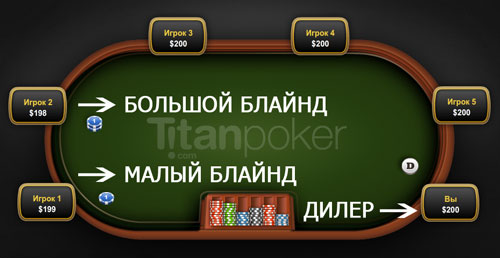
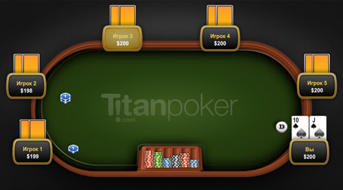
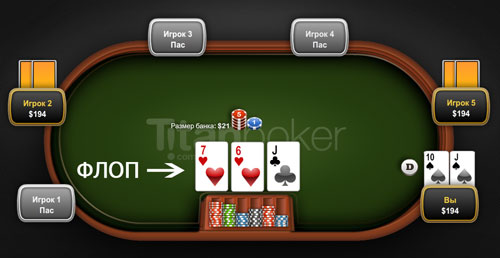
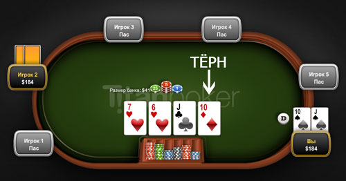
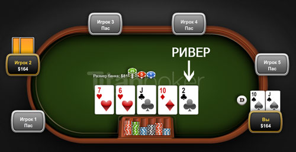
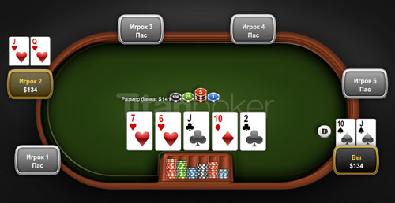

Правила покера - Техасский холдем
Техасский Холдем является одной из разновидностей покера, но в то же время это самая популярная покерная игра. Правила покера довольно просты и новичку не составит особого труда, чтобы научиться играть в Техасский Холдем
Правила игры
Ставки (торги) в Холдеме проходят в несколько этапов или «улиц» (покерный жаргон). Поэтому чтобы новичкам было проще понять принцип игры, представлены правила Холдема в картинках с подробным описанием (все скриншоты выполнены на тренажёре Титан Покер, где Вы можете пройти бесплатное обучение игре в покер).
Начало игры
До того как всем игрокам будут розданы карты, двое игроков ставят блайнды – ставки в слепую. Блайнды ставят два игрока, сидящие по левую сторону от дилера (игрок, раздающий карты) – малый блайнд и большой блайнд.
Малый блайнд – 1-ый игрок, сидящий слева от дилера. Ставит половину ставки, установленную в игре.
Большой блайнд – 2-ой игрок, сидящий слева от дилера. Ставит полную ставку, установленную в данной игре.
Например: Вы садитесь за стол Техасского Холдема с блайндами (ставками) 1$/2$, то 1$ и будет считаться малым блайндом, а 2$ является установленной минимальной ставкой в игре.
Раздача карт: префлоп
После того как сделаны ставки вслепую происходит раздача карт – каждый игрок получает по две карты, которые может видеть только он. Затем начинается первый этап торгов (игроки могут делать ставки), в Техасском Холдеме (и в других видах покера) это называется префлоп.
Первым, свой ход делает игрок, сидящий после большого блайнда, он может сказать:
Call (кол) – уравнять (колировать) установленную в игре ставку и тем самым вступить в торги.
Fold (фолд) – сбросить карты и не принимать участие в данной раздаче.
Raise (рейз) – повысить ставку (минимум в два раза).
All in (ва-банк) – сыграть на все свои фишки (только в без лимитном Холдеме).
Check (чек) – пропустить ход. Можно сказать только если Вы уже вошли в игру и игрок перед Вами пропустил ход. Или в случае, когда Вы на большом блайнде и перед Вами не было повышений.
Затем ход переходит следующему игроку по часовой стрелке и так далее до большого блайнда или пока все ставки не будут уравнены.
Так же следует учесть, если Вы сделали рейз, то следующие участники могут сказать ре-рейз – т.е. повысить Ваш предыдущий рейз. И стоит не забывать, что в Техасском Холдеме в любой момент игры (если Ваша очередь) можно сказать «All in»
Флоп
Флоп – общие открытые три карты, выкладывающиеся на стол (борд). Здесь уже можно видеть какая комбинация карт может быть у Вас или Ваших соперников. Все действия происходят, как и в предыдущем этапе, только первый ход принадлежит игроку, находящемуся на малом блайнде. Если малый блайнд не в игре, то ход переходит к следующему игроку по часовой стрелке.
Запомните на любом этапе игры в покер (Техасский Холдем), торги всегда начинает участник на малом блайнде. За исключением префлопа, так как на этом этапе он делает ставку вслепую, хотя деньги в банк всё равно вкладывает первым.
Тёрн
Четвёртая общая карта называется – тёрн. Все действия игроков идентичны предыдущим этапам.
Ривер
Последняя открытая карта в Техасском Холдеме называется – ривер. Теперь Вы точно можете знать, какая комбинация имеется у Вас на руках, но не забывайте, что можете использовать только пять карт (любые 5) из семи для составления комбинации.
Действия игроков на ривере такие же, как и на предыдущих этапах за исключением того, что когда все игроки уравняют ставки, в Холдеме происходит вскрытие карт (Showdown) и определяется победитель. В случае если все участники сбросили карты, то банк забирает последний игрок сделавший ставку или оставшийся в игре.
